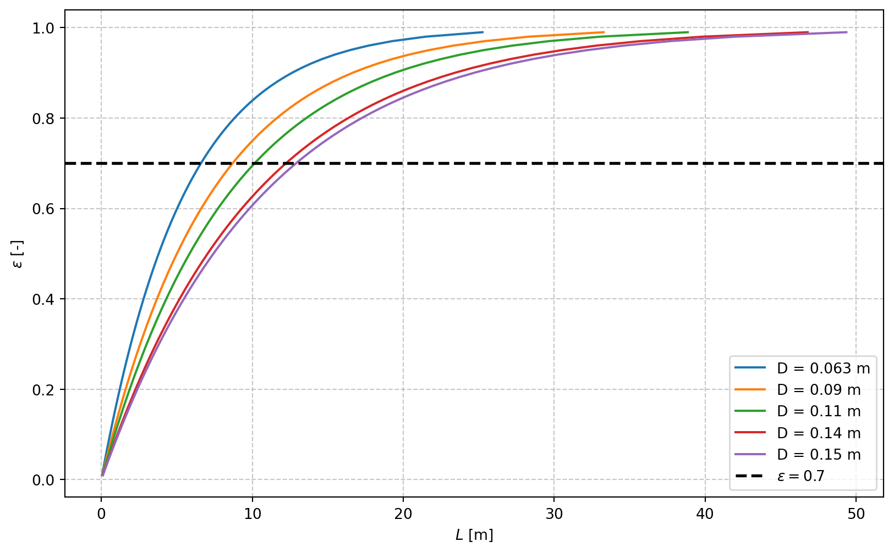

Los valores de temperatura del aire y del suelo a diferentes profundidades en Mérida, Yucatán se obtuvieron de [1], un archivo *.epw (EnergyPlus Weather) que contiene datos climáticos horarios para un año meteorológico típico (TMY) calculado con los datos de 15 años (2011-2025).
La temperatura del aire que entra el intercambiador de calor (Tai) se calculó como la temperatura máxima diaria media mensual del mes con la temperatura media más alta:
from pvlib.iotools import read_epw # Importar la función para leer archivos EPW# Leer el archivo EPWdatos, metadatos = read_epw("data/MEX_YUC_Merida-Rejon.Intl.AP.766440_TMYx.2011-2025.epw")# Obtener el mes con la temperatura media más alta# calcular la media mensual de la temp_air y obtener el mes con la temperatura media más altames = datos.temp_air.resample("ME").mean().idxmax().month # Obtener la temperatura máxima diaria media mensual del mes con la temperatura media más altaTai = datos[datos.index.month == mes].temp_air.resample("D").max().mean()print(f"El mes con la temperatura media más alta es: {mes}.\n La temperatura máxima diaria media mensual del mes\n con la temperatura media más alta es: {Tai:.1f} °C")
El mes con la temperatura media más alta es: 5.
La temperatura máxima diaria media mensual del mes
con la temperatura media más alta es: 37.2 °C
import pandas as pdmonths = ['Ene', 'Feb', 'Mar', 'Abr', 'May', 'Jun', 'Jul', 'Ago', 'Sep', 'Oct', 'Nov', 'Dic']datos_suelo = {}withopen('data/MEX_YUC_Merida-Rejon.Intl.AP.766440_TMYx.2011-2025.epw', 'r') as f:for line in f:if line.startswith('DATA PERIODS'):breakif line.startswith('GROUND TEMPERATURES'): parts = line.strip().split(',') tokens = parts[2:] i =0while i <len(tokens):if tokens[i] =='': i +=1continue depth =float(tokens[i]) i +=4 monthly_values = []for _ inrange(12): monthly_values.append(float(tokens[i])) i +=1 datos_suelo[f"{depth}m"] = monthly_valuessuelo = pd.DataFrame(datos_suelo, index=months)media = suelo.mean()variacion = suelo.max() - suelo.min()suelo.loc['Media'] = mediasuelo.loc['Variación'] = variacionprint(suelo.round(2))
0.5m 2.0m 4.0m
Ene 24.28 25.23 26.01
Feb 24.02 24.77 25.54
Mar 24.48 24.86 25.44
Abr 25.20 25.24 25.58
May 27.06 26.49 26.29
Jun 28.51 27.62 27.05
Jul 29.48 28.53 27.75
Ago 29.77 29.01 28.23
Sep 29.27 28.91 28.35
Oct 28.15 28.27 28.07
Nov 26.65 27.24 27.47
Dic 25.27 26.15 26.73
Media 26.84 26.86 26.88
Variación 5.75 4.24 2.91
La temperatura media del suelo es similar en todas las profundidades y la temperatura a 4 m de profundidad tiene la menor variación mensual a lo largo del año. De acuerdo con el modelo numérico de [2], la temperatura del aire dentro de un intercambiador de calor tierra-aire (EAHE, por sus siglas en inglés) tubular horizontal de 0.15 m de diámetro disminuye 1.6 ºC por cada incremento en la profundidad de 0.5 m en Mérida el día más cálido (20/05 12:00, temp_air = 39.8 ºC). La temperatura a 4 m de profundidad fue \(\approx\) 29.6 ºC, y la temperatura a 4.5 m de profundidad, reportada como la profundiad óptima, fue \(\approx\) 28 ºC. Estas temperaturas sobrestiman la temperatura del suelo alrededor del EAHE porque fueron calculadas para el día más cálido en el interior del tubo (al que entra aire a temp_air). Sin embargo, concuerdan con que la media de la temperatura del suelo a 4 m de profundidad en mayo reportada en el EPW [1] es una aproximación que tiene una variación máxima de \(\pm\) 3 ºC a lo largo del año. Por lo tanto, se eligió la temperatura del suelo a 4 m en mayo como la temperatura de la pared del intercambiador:
Tw = suelo.loc["May", "4.0m"]print(f"La temperatura de la pared del intercambiador es Tw = {Tw:.1f} °C")
La temperatura de la pared del intercambiador es Tw = 26.3 °C
Se supone que las propiedades físicas del suelo de Mérida (tipo arcilloso) son constantes: conductividad térmica k_s = 0.19 W / m ºC, calor específico cp_s = 114.6 kJ / kg ºC [3].
Restricciones
La efectividad (\(\epsilon\)) de un EAHE se puede calcular con la Ecuación 1:
donde Tao es la temperatura del aire a la salida del intercambiador. Se estableció que la efectividad mínima de diseño es \(\epsilon\geq\) 0.7, lo que implica que:
donde h (W/m²·K) es el coeficiente de transferencia de calor por convección, A (m²) es el área de transferencia de calor (\(A=\pi D L\) para un tubo de longitud L), \(\dot{m}=\rho Q\) (kg/s) es el flujo másico del aire y cp = 1.007 kJ/kg·K es el calor específico del aire [4].
El coeficiente de transferencia de calor por convección se calcula con la Ecuación 5[4]:
\[ h = \frac{Nuk}{D}, \tag{5}\]
donde k=2.63 x 10⁻² W/m·K es la conductividad térmica del aire a 300 K y Nu es el número de Nusselt, que se calcula con la Ecuación 6 para flujo turbulento (2300 < Re < 5 x 10⁶) [4]:
Despejando la Ecuación 4 para L y sustituyendo las ecuaciones anteriores, se obtiene la longitud mínima del tubo (L) requerida para alcanzar la efectividad de diseño:
\[ L = \frac{NTUc_p\rho Q}{\pi Nu k}. \tag{8}\]
Despejando la Ecuación 3 para NTU y sustituyendo en la ecuación anterior, se obtiene:
\[ L = \frac{-\ln(1 - \epsilon) c_p \rho Q}{\pi Nu k}. \tag{9}\]
# Constantescp =1.007e3# J/kg·Kk =2.63e-2# W/m·KPr =0.707# Cálculo de la rugosidad relativavarepsilon = (1.82* np.log10(Re) -1.64) ** (-2)# Cálculo del número de NusseltNu = (varepsilon /8* (Re -1000) * Pr) / (1+12.7* (varepsilon /8) **0.5* (Pr ** (2/3) -1))# Cálculo de la longitud mínima del tuboL = (-np.log(1- epsilon) * cp * rho * Q) / (np.pi * Nu * k)print(f"Nu = {Nu.round(2)}.")print(f"L = {L.round(2)} m.")
Nu = [116.19 88.17 75.52 62.7 59.45].
L = [ 6.6 8.7 10.15 12.23 12.9 ] m.
Se observa que L aumenta con el diámetro del tubo debido a que la velocidad del aire disminuye, lo que reduce el número de Reynolds y, por lo tanto, el número de Nusselt y el coeficiente de transferencia de calor por convección. Para tubos de 2, 3, 4 y 5 pulgadas, la longitud mínima requerida para alcanzar la efectividad de diseño es de aproximadamente 6.6, 8.7, 10.15 y 12.23 m, respectivamente. Para un tubo de 0.15 m de diámetro, la longitud mínima requerida es de aproximadamente 12.9 m. La viabilidad económica de instalar tubos de cada diámetro depende de evaluar las caídas de presión en un sistema con tubos de cada diámetro. Tomando en cuenta las dimensiones del local, se podrían instalar tramos de 3 m de longitud aproximadamente, de forma que se necesitarían 2 tubos de 2 pulgadas o 4 tubos de 5 pulgadas para alcanzar la longitud mínima requerida. Aunque el tubo de mayor diámetro implicaría mayores caídas de presión por codos y mayor costo por tubo, se tendrían que evaluar las caídas de presión de todo el sistema para determinar qué opción es más viable económicamente. En la siguiente gráfica se observa la relación entre la longitud del tubo y la efectividad para cada diámetro:
import matplotlib.pyplot as pltepsilon = np.linspace(0.01, 0.99, 100)plt.figure(figsize=(10, 6))# Iterar sobre valores de Re y D simultáneamentefor Re, d_val inzip(Re, D):# Cálculo de la rugosidad relativa varepsilon = (1.82* np.log10(Re) -1.64) ** (-2)# Cálculo del número de Nusselt Nu = (varepsilon /8* (Re -1000) * Pr) / (1+12.7* (varepsilon /8) **0.5* (Pr ** (2/3) -1))# Cálculo de la longitud mínima del tubo L L = (-np.log(1- epsilon) * cp * rho * Q) / (np.pi * Nu * k)# Gráfica epsilon vs L para cada diámetro plt.plot(L, epsilon, label=f'D = {d_val} m')# Línea horizontal en epsilon = 0.7plt.axhline(y=0.7, color='black', linestyle='--', linewidth=2, label=r'$\epsilon = 0.7$')plt.xlabel('$L$ [m]')plt.ylabel(r'$\epsilon$[-]')plt.grid(True, linestyle='--', alpha=0.7)plt.legend()

Se observa que para \(\epsilon\) = 0.6, la longitud mínima de los tubos de todos los diámetros es menor a 10 m, por lo que si se considera esta efectividad en el diseño, se podría seleccionar el diámetro de tubo que minimice los costos del material y las caídas de presión y mantener la longitud de los tubos por debajo de 10 m. Se tendría que evaluar si la Tao a una efectividad de 0.6 es suficiente para el confort térmico del local y también habría que evaluar la diferencia de Tao entre una efectividad de 0.6 y una efectividad de 0.7 para determinar si la reducción en la longitud del tubo justifica la reducción en la efectividad.
Z. Driss, B. Necib, y H.-C. Zhang, Eds., CFDTechniques and Thermo-MechanicsApplications. Cham: Springer International Publishing, 2018. doi: 10.1007/978-3-319-70945-1.
[3]
M. Rodríguez-Vázquez, J. Xamán, Y. Chávez, I. Hernández-Pérez, y E. Simá, “Thermal potential of a geothermal earth-to-air heat exchanger in six climatic conditions of México”, Mechanics & Industry, vol. 21, núm. 3, p. 308, 2020, doi: 10.1051/meca/2020016.
[4]
F. P. Incropera, D. P. DeWitt, T. L. Bergman, y A. S. Lavine, Eds., Fundamentals of heat and mass transfer, 6. ed. Hoboken, NJ: Wiley, 2007.
[5]
A. I. Anaya-Durand, G. I. Cauich-Segovia, O. Funabazama-Bárcenas, y V. Alfonso Gracia-Medrano-Bravo, “Evaluación de ecuaciones de factor de fricción explícito para tuberías”, Educación Química, vol. 25, núm. 2, pp. 128–134, abr. 2014, doi: 10.1016/S0187-893X(14)70535-X.